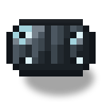
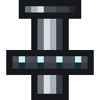

Шлюзовая дверь реактора
alaindustrial:reactor_door
Сводка
Шлюзовая дверь реактора — блок оболочки высотой в две клетки и штатный способ попасть внутрь комнаты. Сама дверь необязательна: замуроваться и прокопаться обратно — законный способ держать реактор, от оболочки требуется только герметичность. Но если дверь в ней стоит, она обязана образовать настоящий проём: дверь, лежащая в полу, — это ошибка, а не выбор, и контроллер скажет об этом при сборке, а не после.
Дверь намеренно не ведёт себя как ванильная железная. Её нельзя открыть рукой и нельзя «оставить открытой»: она открывается только по импульсу редстоуна и закрывается сама. Состояния «открыта навсегда» не существует.
Как её открыть
| Действие | Что происходит |
|---|---|
| ПКМ рукой | ничего |
| Нарастающий фронт редстоуна (кнопка, нажимная плита, рычаг) | дверь открывается на (по умолчанию 40 тиков = 2 с) |
| Сигнал держат рычагом | дверь всё равно закрывается по таймеру; удержание её не держит |
| Снятие сигнала | ничего: спадающий фронт игнорируется намеренно |
| Новый фронт, пока дверь открыта | таймер закрытия отсчитывается заново |
| В проёме стоит игрок или моб | закрытие откладывается, повторная проверка каждые (по умолчанию 10 тиков) |
Почему именно так. Ванильная железная дверь держится открытой ровно столько, сколько горит сигнал, — то есть её судьба зависит от того, не забыл ли кто-то рычаг. Для двери, которая держит герметичность реакторной комнаты, это плохой контракт. Импульсная дверь превращает нарушение герметичности в событие длиной в две секунды, а не в состояние, которое может тянуться часами.
Ждать сущность в проёме дверь обязана по обратной причине: комната, ради которой всё затевается, — это место, где игрок должен находиться внутри. Дверь, захлопывающаяся на игроке, была бы ловушкой в единственном узком месте постройки.
Ставится дверь всегда закрытой, даже если рядом уже горит сигнал: иначе новая дверь появлялась бы открытой и оболочка оказывалась бы негерметичной прямо в момент постройки.
Звук у шлюза свой, а не ванильной железной двери, — см. раздел «Звук» ниже.
Чем подать импульс изнутри. Снаружи годится что угодно — кнопка, рычаг, нажимная плита. Изнутри герметичной комнаты источник сигнала нужен такой же герметичный, поэтому вместе с дверью появилась реакторная кнопка: тот же экранирующий сплав, время нажатия = 20 тиков (1 с) — половина от, так что импульс заведомо укладывается в окно открытия. Ванильная кнопка тоже сработает, но она деревянная или каменная — то есть ровно то, что на этапе 4 внутри активной комнаты перестанет существовать. Кнопка на стене клетку оболочки не занимает и герметичность не нарушает.
Как она движется
Дверь не распахивается — полотно уезжает вниз, в пол, и поднимается обратно, как переборка шлюза. Ход занимает (по умолчанию 8 тиков ≈ 0,4 с) в каждую сторону: пятая часть от окна открытия, чтобы движение читалось как механика, а не съедало те две секунды, ради которых дверь и открывается. Полотно трогается и останавливается плавно, без рывка на концах.
Под комнатой при этом ничего не нужно: полотно рисуется только в пределах самого проёма и просто перестаёт быть видимым по мере ухода вниз. Прятать его некуда и незачем — в клетке под дверью может стоять что угодно.
Ход полотна — чисто визуальная величина. Блокстейт open по-прежнему переключается за один тик, и вместе с ним мгновенно меняются проходимость, пути мобов и трассировка радиации. То есть дверь становится проходимой в тот же миг, когда полотно трогается, а не когда доезжает: 0,4 секунды рассинхронизации между «сквозь неё уже можно пройти» и «она уже уехала» — цена за то, что редстоун- контракт остался ровно тем же, каким был.
Открытая дверь не оставляет в проёме ничего: формы у неё в этот момент нет вовсе. Отсюда два следствия. Полезное — открытый проём честно пропускает радиацию наружу (трассировка упирается в коллизию, а её нет). Неудобное — пока дверь открыта, по ней нельзя кликнуть и её нельзя сломать; через две секунды она закроется и снова станет целью.
Проём: где дверь считается входом
Для контроллера мало, чтобы дверь просто была в оболочке. Нужен проём — две клетки двери одна над другой, причём нижняя на уровне внутреннего пола комнаты. Иначе это окно, а не вход.
| Ситуация | Статус контроллера |
|---|---|
| Двери в оболочке нет вообще | условие выполнено — дверь необязательна |
| Дверь есть, но проёма нет (лежит в полу/потолке, стоит выше уровня пола) | NO_DOORWAY — «Нет проёма» |
| Есть хотя бы один проём | условие выполнено |
Дверей может быть сколько угодно: две — «вход» и «выход» — нормальная планировка. Требование ровно одно: минимум один настоящий проём.
Энергия
| Поле | Значение |
|---|---|
| Роль | нет |
| Буфер (EU/FE) | 0 |
| Макс. вход / выход (EU/FE/такт) | н/п |
Дверь питается редстоуном, а не EU/FE. Приводу внутри неё энергия не нужна — он уже оплачен крафтом.
Свойства блока
| Поле | Значение |
|---|---|
| Форма | полотно 3/16 блока толщиной во всю высоту и ширину клетки; открытая дверь формы не имеет вовсе |
| Размер | 1×2 (нижняя и верхняя половины — один объект) |
| Окклюзия | (не полный куб) |
| Прочность | 5.0 |
| Взрывоустойчивость | 30.0 |
| Инструмент | кирка (обязательна для дропа) |
| Звук | металл |
| Реакция на поршень | разрушается |
| Блокстейты | facing, half, open, powered, formed, hinge (не используется) |
Две половины живут и умирают вместе: сломав любую, игрок получает одну дверь, а вторая половина исчезает. Пути мобов дверь пропускает только в открытом состоянии.
hinge — наследство распашной версии. У сдвижной двери петель нет, и на вид она не влияет ни в одном положении. Свойство оставлено намеренно: убрать его из набора — значит поменять набор блокстейтов у дверей, уже построенных в чужих мирах, а такой ценой избавляться от одного неиспользуемого флага незачем.
Полотно рисует не запечённая модель, а рендерер блока: модель, у которой есть только два положения, не умеет показать движение между ними. Плата за это — у двери нет ambient occlusion и не рисуется сетка трещин, пока её ломают.
formed дверь несёт наравне с остальной оболочкой — контроллер пишет его во все клетки собранной комнаты (см. «Бесшовный вид»). На вид двери он, в отличие от обшивки и стекла, пока не влияет: отдельной бесшовной текстуры у полотна нет. Свойство хранится ради единообразия — сканеру и заливке флага не нужно знать, у какого блока оболочки есть косметический вариант, а у какого нет.
powered хранится ровно для одного — чтобы отличить нарастающий фронт от «сигнал всё ещё есть». Без него каждое обновление соседей при включённом рычаге читалось бы как новый импульс, и дверь открывалась бы заново сразу после того, как игрок увидел её закрывшейся.
Звук
У шлюзовой двери свой голос вместо обычной железной: при открытии шипит стравливаемое уплотнение , при закрытии щёлкает пневматический замок . Ванильных звуков железной двери у неё нет ни в одном положении — на слух понятно, что это вход в реакторный зал, а не в подвал.
Рецепты
Крафт — ×1 за раз, полная сетка 3×3.
P G P P = экранирующая пластина ×2
W D W G = реакторное стекло ×1
R V R W = изолированный медный кабель ×2
D = железная дверь ×1
R = укреплённая экранирующая пластина ×2
V = привод управляющих стержней ×1Рецепт читается как устройство блока: ванильное железное полотно в середине одевается в экранирующий сплав — обычные пластины поверху, укреплённые понизу, — реакторное стекло становится круглым иллюминатором верхней половины, два изолированных медных кабеля подводят питание, а привод в нижнем ряду превращает створку в шлюз.
Привод — отдельный предмет: 3 экранирующие пластины, 2 железных слитка, электронная схема, 2 пластины закалённого железа и поршень
Прогрессия
Тир: нет. Требует: две экранирующие пластины, две укреплённые экранирующие пластины (см. обшивку — вся цепочка описана там), реакторное стекло, два изолированных медных кабеля, ванильную железную дверь и привод управляющих стержней. Открывает: штатный вход в собранную комнату — единственный способ входить и выходить, не разбирая оболочку.
Привод здесь появляется впервые, но не в последний раз: он же входит в контроллер, а на этапе 2 получает свой настоящий смысл — регулировку глубины погружения стержней.
Связанное
Реакторная обшивка — остальная оболочка и материальная цепочка. Контроллер реактора — кто проверяет наличие двери и проёма. Реакторная кнопка — чем подать импульс изнутри комнаты. Реакторное стекло — окно, которое дверью не является. Термоцентрифуга — прецедент «редстоун как орган управления машиной», но с противоположным контрактом: там сигнал надо держать.
Крафт
Крафт на верстаке
iron d


▶
Шлюзовая дверь реактора